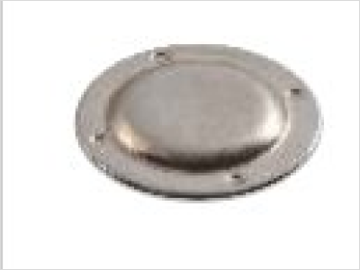

Market : Electrical
Are Corrosion free Parts Possible – yes if you are working with EIGEN
By leveraging Eigen's cross function team (CFT) detailed analysis methodology, Eigen re-engineered the proecess and is able to help a large supplier meet corrosion test requirements.
Discover more